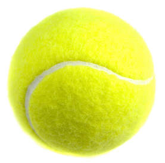
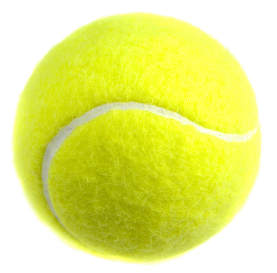

Tennis Trivia!
Click the ball to get started!
Time Remaining:
Click the ball to get started!
Time Remaining:
1. Who defeated tennis player Bobby Riggs in the famous "Battle of the Sexes?"
2. Who did John McEnroe defeat in the final to win his first Wimbledon singles title?
3. What year was tennis originally introduced as an Olympic sport?
4. What is the name for the left side of the tennis court for each player?
5. For a tennis player, winning the "Grand Slam" involves winning what four tournaments in the same calendar year?
6. Who was the first unseeded player to win Wimbledon?
7. How long was the longest singles match in recorded tennis history?
Done
Correct Answers: